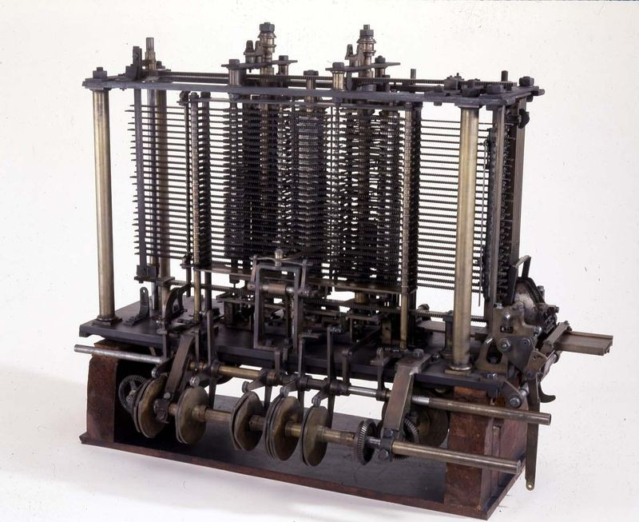
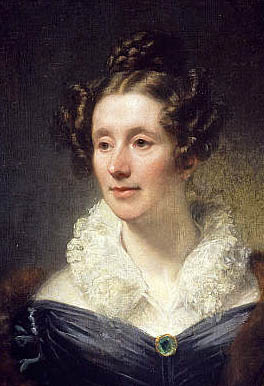
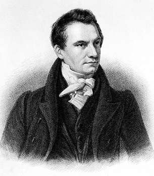
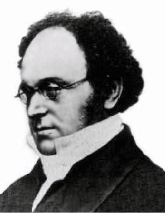

Ada lovelace was a mathmatician known for her work
on Charles Babbage's mechanical computer during the 1800s. She was born on December 10, 1815 in London and died at the age of 37 in November 27.

Influencers

Mary Somerville was a friend of lovelace that often worked with her on math.

Charles Babbage was inventor that Lovelace met at a yound age and inspired her.

Augustus de morgan assisted Ada Lovelace with some of the math she needed to do.